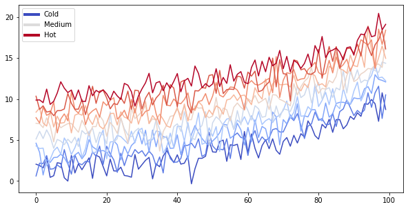

<!DOCTYPE html>

<html>
  <head>
    <meta charset="utf-8" />
    <meta name="viewport" content="width=device-width, initial-scale=1.0" /><meta name="generator" content="Docutils 0.17.1: http://docutils.sourceforge.net/" />

    <title>My sample book</title>
    
  <!-- Loaded before other Sphinx assets -->
  <link href="_static/styles/theme.css?digest=1999514e3f237ded88cf" rel="stylesheet">
<link href="_static/styles/pydata-sphinx-theme.css?digest=1999514e3f237ded88cf" rel="stylesheet">

    
  <link rel="stylesheet"
    href="_static/vendor/fontawesome/5.13.0/css/all.min.css">
  <link rel="preload" as="font" type="font/woff2" crossorigin
    href="_static/vendor/fontawesome/5.13.0/webfonts/fa-solid-900.woff2">
  <link rel="preload" as="font" type="font/woff2" crossorigin
    href="_static/vendor/fontawesome/5.13.0/webfonts/fa-brands-400.woff2">

    <link rel="stylesheet" type="text/css" href="_static/pygments.css" />
    <link rel="stylesheet" href="_static/styles/sphinx-book-theme.css?digest=5115cc725059bd94278eecd172e13a965bf8f5a9" type="text/css" />
    <link rel="stylesheet" type="text/css" href="_static/togglebutton.css" />
    <link rel="stylesheet" type="text/css" href="_static/copybutton.css" />
    <link rel="stylesheet" type="text/css" href="_static/mystnb.css" />
    <link rel="stylesheet" type="text/css" href="_static/sphinx-thebe.css" />
    <link rel="stylesheet" type="text/css" href="_static/design-style.b7bb847fb20b106c3d81b95245e65545.min.css" />
    
  <!-- Pre-loaded scripts that we'll load fully later -->
  <link rel="preload" as="script" href="_static/scripts/pydata-sphinx-theme.js?digest=1999514e3f237ded88cf">

    <script data-url_root="./" id="documentation_options" src="_static/documentation_options.js"></script>
    <script src="_static/jquery.js"></script>
    <script src="_static/underscore.js"></script>
    <script src="_static/doctools.js"></script>
    <script src="_static/clipboard.min.js"></script>
    <script src="_static/copybutton.js"></script>
    <script src="_static/scripts/sphinx-book-theme.js?digest=9c920249402e914e316237a7dbc6769907cce411"></script>
    <script>let toggleHintShow = 'Click to show';</script>
    <script>let toggleHintHide = 'Click to hide';</script>
    <script>let toggleOpenOnPrint = 'true';</script>
    <script src="_static/togglebutton.js"></script>
    <script>var togglebuttonSelector = '.toggle, .admonition.dropdown, .tag_hide_input div.cell_input, .tag_hide-input div.cell_input, .tag_hide_output div.cell_output, .tag_hide-output div.cell_output, .tag_hide_cell.cell, .tag_hide-cell.cell';</script>
    <script src="_static/design-tabs.js"></script>
    <script>const THEBE_JS_URL = "https://unpkg.com/thebe@0.8.2/lib/index.js"
const thebe_selector = ".thebe,.cell"
const thebe_selector_input = "pre"
const thebe_selector_output = ".output, .cell_output"
</script>
    <script async="async" src="_static/sphinx-thebe.js"></script>
    <script>window.MathJax = {"options": {"processHtmlClass": "tex2jax_process|mathjax_process|math|output_area"}}</script>
    <script defer="defer" src="https://cdn.jsdelivr.net/npm/mathjax@3/es5/tex-mml-chtml.js"></script>
    <link rel="index" title="Index" href="genindex.html" />
    <link rel="search" title="Search" href="search.html" />
    <meta name="viewport" content="width=device-width, initial-scale=1" />
    <meta name="docsearch:language" content="None">
    

    <!-- Google Analytics -->
    
  </head>
  <body data-spy="scroll" data-target="#bd-toc-nav" data-offset="60">
<!-- Checkboxes to toggle the left sidebar -->
<input type="checkbox" class="sidebar-toggle" name="__navigation" id="__navigation" aria-label="Toggle navigation sidebar">
<label class="overlay overlay-navbar" for="__navigation">
    <div class="visually-hidden">Toggle navigation sidebar</div>
</label>
<!-- Checkboxes to toggle the in-page toc -->
<input type="checkbox" class="sidebar-toggle" name="__page-toc" id="__page-toc" aria-label="Toggle in-page Table of Contents">
<label class="overlay overlay-pagetoc" for="__page-toc">
    <div class="visually-hidden">Toggle in-page Table of Contents</div>
</label>
<!-- Headers at the top -->
<div class="announcement header-item noprint"></div>
<div class="header header-item noprint"></div>

    
    <div class="container-fluid" id="banner"></div>

    

    <div class="container-xl">
      <div class="row">
          
<!-- Sidebar -->
<div class="bd-sidebar noprint single-page" id="site-navigation">
</div>


          


          
<!-- A tiny helper pixel to detect if we've scrolled -->
<div class="sbt-scroll-pixel-helper"></div>
<!-- Main content -->
<div class="col py-0 content-container">
    
    <div class="header-article row sticky-top noprint">
        


<div class="col py-1 d-flex header-article-main">
    <div class="header-article__left">
        
    </div>
    <div class="header-article__right">
<button onclick="toggleFullScreen()"
  class="headerbtn"
  data-toggle="tooltip"
data-placement="bottom"
title="Fullscreen mode"
>
  

<span class="headerbtn__icon-container">
  <i class="fas fa-expand"></i>
  </span>

</button>

<div class="menu-dropdown menu-dropdown-repository-buttons">
  <button class="headerbtn menu-dropdown__trigger"
      aria-label="Source repositories">
      <i class="fab fa-github"></i>
  </button>
  <div class="menu-dropdown__content">
    <ul>
      <li>
        <a href="https://github.com/executablebooks/jupyter-book"
   class="headerbtn"
   data-toggle="tooltip"
data-placement="left"
title="Source repository"
>
  

<span class="headerbtn__icon-container">
  <i class="fab fa-github"></i>
  </span>
<span class="headerbtn__text-container">repository</span>
</a>

      </li>
      
      <li>
        <a href="https://github.com/executablebooks/jupyter-book/issues/new?title=Issue%20on%20page%20%2Fintro.html&body=Your%20issue%20content%20here."
   class="headerbtn"
   data-toggle="tooltip"
data-placement="left"
title="Open an issue"
>
  

<span class="headerbtn__icon-container">
  <i class="fas fa-lightbulb"></i>
  </span>
<span class="headerbtn__text-container">open issue</span>
</a>

      </li>
      
    </ul>
  </div>
</div>
<label for="__page-toc"
  class="headerbtn headerbtn-page-toc"
  
>
  

<span class="headerbtn__icon-container">
  <i class="fas fa-list"></i>
  </span>

</label>

    </div>
</div>

<!-- Table of contents -->
<div class="col-md-3 bd-toc show noprint">
    <div class="tocsection onthispage pt-5 pb-3">
        <i class="fas fa-list"></i> Contents
    </div>
    <nav id="bd-toc-nav" aria-label="Page">
        <p class="caption" role="heading">
 <span class="caption-text">
  markdown
 </span>
</p>
<ul class="visible nav section-nav flex-column">
 <li class="toctree-l1 toc-h1 nav-item toc-entry">
  <a class="reference internal nav-link" href="intro.html#document-markdown">
   Markdown Files
  </a>
 </li>
 <li class="toctree-l1 toc-h1 nav-item toc-entry">
  <a class="reference internal nav-link" href="intro.html#document-markdown-notebooks">
   Notebooks with MyST Markdown
  </a>
 </li>
</ul>
<p class="caption" role="heading">
 <span class="caption-text">
  Python
 </span>
</p>
<ul class="nav section-nav flex-column">
 <li class="toctree-l1 nav-item toc-entry">
  <a class="reference internal nav-link" href="intro.html#document-notebooks">
   Content with notebooks
  </a>
 </li>
</ul>
<p class="caption" role="heading">
 <span class="caption-text">
  Bash
 </span>
</p>
<ul class="nav section-nav flex-column">
 <li class="toctree-l1 nav-item toc-entry">
  <a class="reference internal nav-link" href="intro.html#document-notebook_bash">
   Notebook Bash
  </a>
 </li>
</ul>

    </nav>
</div>
    </div>
    <div class="article row">
        <div class="col pl-md-3 pl-lg-5 content-container">
            <!-- Table of contents that is only displayed when printing the page -->
            <div id="jb-print-docs-body" class="onlyprint">
                <h1>Welcome to your Jupyter Book</h1>
                <!-- Table of contents -->
                <div id="print-main-content">
                    <div id="jb-print-toc">
                        
                        <div>
                            <h2> Contents </h2>
                        </div>
                        <nav aria-label="Page">
                            <p class="caption" role="heading">
 <span class="caption-text">
  markdown
 </span>
</p>
<ul class="visible nav section-nav flex-column">
 <li class="toctree-l1 toc-h1 nav-item toc-entry">
  <a class="reference internal nav-link" href="intro.html#document-markdown">
   Markdown Files
  </a>
 </li>
 <li class="toctree-l1 toc-h1 nav-item toc-entry">
  <a class="reference internal nav-link" href="intro.html#document-markdown-notebooks">
   Notebooks with MyST Markdown
  </a>
 </li>
</ul>
<p class="caption" role="heading">
 <span class="caption-text">
  Python
 </span>
</p>
<ul class="nav section-nav flex-column">
 <li class="toctree-l1 nav-item toc-entry">
  <a class="reference internal nav-link" href="intro.html#document-notebooks">
   Content with notebooks
  </a>
 </li>
</ul>
<p class="caption" role="heading">
 <span class="caption-text">
  Bash
 </span>
</p>
<ul class="nav section-nav flex-column">
 <li class="toctree-l1 nav-item toc-entry">
  <a class="reference internal nav-link" href="intro.html#document-notebook_bash">
   Notebook Bash
  </a>
 </li>
</ul>

                        </nav>
                    </div>
                </div>
            </div>
            <main id="main-content" role="main">
                
              <div>
                
  <section class="tex2jax_ignore mathjax_ignore" id="welcome-to-your-jupyter-book">
<h1>Welcome to your Jupyter Book<a class="headerlink" href="#welcome-to-your-jupyter-book" title="Permalink to this headline">#</a></h1>
<p>This is a small sample book to give you a feel for how book content is
structured.
It shows off a few of the major file types, as well as some sample content.
It does not go in-depth into any particular topic - check out <a class="reference external" href="https://jupyterbook.org">the Jupyter Book documentation</a> for more information.</p>
<p>Check out the content pages bundled with this sample book to see more.</p>
<div class="toctree-wrapper compound">
<span id="document-markdown"></span><section class="tex2jax_ignore mathjax_ignore" id="markdown-files">
<h2>Markdown Files<a class="headerlink" href="#markdown-files" title="Permalink to this headline">#</a></h2>
<p>Whether you write your book’s content in Jupyter Notebooks (<code class="docutils literal notranslate"><span class="pre">.ipynb</span></code>) or
in regular markdown files (<code class="docutils literal notranslate"><span class="pre">.md</span></code>), you’ll write in the same flavor of markdown
called <strong>MyST Markdown</strong>.
This is a simple file to help you get started and show off some syntax.</p>
<section id="what-is-myst">
<h3>What is MyST?<a class="headerlink" href="#what-is-myst" title="Permalink to this headline">#</a></h3>
<p>MyST stands for “Markedly Structured Text”. It
is a slight variation on a flavor of markdown called “CommonMark” markdown,
with small syntax extensions to allow you to write <strong>roles</strong> and <strong>directives</strong>
in the Sphinx ecosystem.</p>
<p>For more about MyST, see <a class="reference external" href="https://jupyterbook.org/content/myst.html">the MyST Markdown Overview</a>.</p>
</section>
<section id="sample-roles-and-directives">
<h3>Sample Roles and Directives<a class="headerlink" href="#sample-roles-and-directives" title="Permalink to this headline">#</a></h3>
<p>Roles and directives are two of the most powerful tools in Jupyter Book. They
are kind of like functions, but written in a markup language. They both
serve a similar purpose, but <strong>roles are written in one line</strong>, whereas
<strong>directives span many lines</strong>. They both accept different kinds of inputs,
and what they do with those inputs depends on the specific role or directive
that is being called.</p>
<p>Here is a “note” directive:</p>
<div class="admonition note">
<p class="admonition-title">Note</p>
<p>Here is a note</p>
</div>
<p>It will be rendered in a special box when you build your book.</p>
<p>Here is an inline directive to refer to a document: <a class="reference internal" href="intro.html#document-markdown-notebooks"><span class="doc">Notebooks with MyST Markdown</span></a>.</p>
</section>
<section id="citations">
<h3>Citations<a class="headerlink" href="#citations" title="Permalink to this headline">#</a></h3>
<p>You can also cite references that are stored in a <code class="docutils literal notranslate"><span class="pre">bibtex</span></code> file. For example,
the following syntax: <code class="docutils literal notranslate"><span class="pre">{cite}`holdgraf_evidence_2014`</span></code> will render like
this: <span id="id1">[<a class="reference internal" href="#id3" title="Christopher Ramsay Holdgraf, Wendy de Heer, Brian N. Pasley, and Robert T. Knight. Evidence for Predictive Coding in Human Auditory Cortex. In International Conference on Cognitive Neuroscience. Brisbane, Australia, Australia, 2014. Frontiers in Neuroscience.">HdHPK14</a>]</span>.</p>
<p>Moreover, you can insert a bibliography into your page with this syntax:
The <code class="docutils literal notranslate"><span class="pre">{bibliography}</span></code> directive must be used for all the <code class="docutils literal notranslate"><span class="pre">{cite}</span></code> roles to
render properly.
For example, if the references for your book are stored in <code class="docutils literal notranslate"><span class="pre">references.bib</span></code>,
then the bibliography is inserted with:</p>
<div class="docutils container" id="id2">
<dl class="citation">
<dt class="label" id="id3"><span class="brackets"><a class="fn-backref" href="#id1">HdHPK14</a></span></dt>
<dd><p>Christopher Ramsay Holdgraf, Wendy de Heer, Brian N. Pasley, and Robert T. Knight. Evidence for Predictive Coding in Human Auditory Cortex. In <em>International Conference on Cognitive Neuroscience</em>. Brisbane, Australia, Australia, 2014. Frontiers in Neuroscience.</p>
</dd>
</dl>
</div>
</section>
<section id="learn-more">
<h3>Learn more<a class="headerlink" href="#learn-more" title="Permalink to this headline">#</a></h3>
<p>This is just a simple starter to get you started.
You can learn a lot more at <a class="reference external" href="https://jupyterbook.org">jupyterbook.org</a>.</p>
</section>
</section>
<span id="document-markdown-notebooks"></span><section class="tex2jax_ignore mathjax_ignore" id="notebooks-with-myst-markdown">
<h2>Notebooks with MyST Markdown<a class="headerlink" href="#notebooks-with-myst-markdown" title="Permalink to this headline">#</a></h2>
<p>Jupyter Book also lets you write text-based notebooks using MyST Markdown.
See <a class="reference external" href="https://jupyterbook.org/file-types/myst-notebooks.html">the Notebooks with MyST Markdown documentation</a> for more detailed instructions.
This page shows off a notebook written in MyST Markdown.</p>
<section id="an-example-cell">
<h3>An example cell<a class="headerlink" href="#an-example-cell" title="Permalink to this headline">#</a></h3>
<p>With MyST Markdown, you can define code cells with a directive like so:</p>
<div class="cell docutils container">
<div class="cell_input docutils container">
<div class="highlight-ipython3 notranslate"><div class="highlight"><pre><span></span><span class="nb">print</span><span class="p">(</span><span class="mi">2</span> <span class="o">+</span> <span class="mi">2</span><span class="p">)</span>
</pre></div>
</div>
</div>
<div class="cell_output docutils container">
<div class="output stream highlight-myst-ansi notranslate"><div class="highlight"><pre><span></span>4
</pre></div>
</div>
</div>
</div>
<p>When your book is built, the contents of any <code class="docutils literal notranslate"><span class="pre">{code-cell}</span></code> blocks will be
executed with your default Jupyter kernel, and their outputs will be displayed
in-line with the rest of your content.</p>
<div class="admonition seealso">
<p class="admonition-title">See also</p>
<p>Jupyter Book uses <a class="reference external" href="https://jupytext.readthedocs.io/en/latest/">Jupytext</a> to convert text-based files to notebooks, and can support <a class="reference external" href="https://jupyterbook.org/file-types/jupytext.html">many other text-based notebook files</a>.</p>
</div>
</section>
<section id="create-a-notebook-with-myst-markdown">
<h3>Create a notebook with MyST Markdown<a class="headerlink" href="#create-a-notebook-with-myst-markdown" title="Permalink to this headline">#</a></h3>
<p>MyST Markdown notebooks are defined by two things:</p>
<ol class="simple">
<li><p>YAML metadata that is needed to understand if / how it should convert text files to notebooks (including information about the kernel needed).
See the YAML at the top of this page for example.</p></li>
<li><p>The presence of <code class="docutils literal notranslate"><span class="pre">{code-cell}</span></code> directives, which will be executed with your book.</p></li>
</ol>
<p>That’s all that is needed to get started!</p>
</section>
<section id="quickly-add-yaml-metadata-for-myst-notebooks">
<h3>Quickly add YAML metadata for MyST Notebooks<a class="headerlink" href="#quickly-add-yaml-metadata-for-myst-notebooks" title="Permalink to this headline">#</a></h3>
<p>If you have a markdown file and you’d like to quickly add YAML metadata to it, so that Jupyter Book will treat it as a MyST Markdown Notebook, run the following command:</p>
<div class="highlight-default notranslate"><div class="highlight"><pre><span></span><span class="n">jupyter</span><span class="o">-</span><span class="n">book</span> <span class="n">myst</span> <span class="n">init</span> <span class="n">path</span><span class="o">/</span><span class="n">to</span><span class="o">/</span><span class="n">markdownfile</span><span class="o">.</span><span class="n">md</span>
</pre></div>
</div>
</section>
</section>
</div>
<div class="toctree-wrapper compound">
<span id="document-notebooks"></span><section class="tex2jax_ignore mathjax_ignore" id="content-with-notebooks">
<h2>Content with notebooks<a class="headerlink" href="#content-with-notebooks" title="Permalink to this headline">#</a></h2>
<p>You can also create content with Jupyter Notebooks. This means that you can include
code blocks and their outputs in your book.</p>
<section id="markdown-notebooks">
<h3>Markdown + notebooks<a class="headerlink" href="#markdown-notebooks" title="Permalink to this headline">#</a></h3>
<p>As it is markdown, you can embed images, HTML, etc into your posts!</p>
<p></p>
<p>You can also <span class="math notranslate nohighlight">\(add_{math}\)</span> and</p>
<div class="math notranslate nohighlight">
\[
math^{blocks}
\]</div>
<p>or</p>
<div class="math notranslate nohighlight">
\[\begin{split}
\begin{aligned}
\mbox{mean} la_{tex} \\ \\
math blocks
\end{aligned}
\end{split}\]</div>
<p>But make sure you $Escape $your $dollar signs $you want to keep!</p>
</section>
<section id="myst-markdown">
<h3>MyST markdown<a class="headerlink" href="#myst-markdown" title="Permalink to this headline">#</a></h3>
<p>MyST markdown works in Jupyter Notebooks as well. For more information about MyST markdown, check
out <a class="reference external" href="https://jupyterbook.org/content/myst.html">the MyST guide in Jupyter Book</a>,
or see <a class="reference external" href="https://myst-parser.readthedocs.io/en/latest/">the MyST markdown documentation</a>.</p>
</section>
<section id="code-blocks-and-outputs">
<h3>Code blocks and outputs<a class="headerlink" href="#code-blocks-and-outputs" title="Permalink to this headline">#</a></h3>
<p>Jupyter Book will also embed your code blocks and output in your book.
For example, here’s some sample Matplotlib code:</p>
<div class="cell docutils container">
<div class="cell_input docutils container">
<div class="highlight-ipython3 notranslate"><div class="highlight"><pre><span></span><span class="kn">from</span> <span class="nn">matplotlib</span> <span class="kn">import</span> <span class="n">rcParams</span><span class="p">,</span> <span class="n">cycler</span>
<span class="kn">import</span> <span class="nn">matplotlib.pyplot</span> <span class="k">as</span> <span class="nn">plt</span>
<span class="kn">import</span> <span class="nn">numpy</span> <span class="k">as</span> <span class="nn">np</span>
<span class="n">plt</span><span class="o">.</span><span class="n">ion</span><span class="p">()</span>
</pre></div>
</div>
</div>
</div>
<div class="cell docutils container">
<div class="cell_input docutils container">
<div class="highlight-ipython3 notranslate"><div class="highlight"><pre><span></span><span class="c1"># Fixing random state for reproducibility</span>
<span class="n">np</span><span class="o">.</span><span class="n">random</span><span class="o">.</span><span class="n">seed</span><span class="p">(</span><span class="mi">19680801</span><span class="p">)</span>

<span class="n">N</span> <span class="o">=</span> <span class="mi">10</span>
<span class="n">data</span> <span class="o">=</span> <span class="p">[</span><span class="n">np</span><span class="o">.</span><span class="n">logspace</span><span class="p">(</span><span class="mi">0</span><span class="p">,</span> <span class="mi">1</span><span class="p">,</span> <span class="mi">100</span><span class="p">)</span> <span class="o">+</span> <span class="n">np</span><span class="o">.</span><span class="n">random</span><span class="o">.</span><span class="n">randn</span><span class="p">(</span><span class="mi">100</span><span class="p">)</span> <span class="o">+</span> <span class="n">ii</span> <span class="k">for</span> <span class="n">ii</span> <span class="ow">in</span> <span class="nb">range</span><span class="p">(</span><span class="n">N</span><span class="p">)]</span>
<span class="n">data</span> <span class="o">=</span> <span class="n">np</span><span class="o">.</span><span class="n">array</span><span class="p">(</span><span class="n">data</span><span class="p">)</span><span class="o">.</span><span class="n">T</span>
<span class="n">cmap</span> <span class="o">=</span> <span class="n">plt</span><span class="o">.</span><span class="n">cm</span><span class="o">.</span><span class="n">coolwarm</span>
<span class="n">rcParams</span><span class="p">[</span><span class="s1">&#39;axes.prop_cycle&#39;</span><span class="p">]</span> <span class="o">=</span> <span class="n">cycler</span><span class="p">(</span><span class="n">color</span><span class="o">=</span><span class="n">cmap</span><span class="p">(</span><span class="n">np</span><span class="o">.</span><span class="n">linspace</span><span class="p">(</span><span class="mi">0</span><span class="p">,</span> <span class="mi">1</span><span class="p">,</span> <span class="n">N</span><span class="p">)))</span>


<span class="kn">from</span> <span class="nn">matplotlib.lines</span> <span class="kn">import</span> <span class="n">Line2D</span>
<span class="n">custom_lines</span> <span class="o">=</span> <span class="p">[</span><span class="n">Line2D</span><span class="p">([</span><span class="mi">0</span><span class="p">],</span> <span class="p">[</span><span class="mi">0</span><span class="p">],</span> <span class="n">color</span><span class="o">=</span><span class="n">cmap</span><span class="p">(</span><span class="mf">0.</span><span class="p">),</span> <span class="n">lw</span><span class="o">=</span><span class="mi">4</span><span class="p">),</span>
                <span class="n">Line2D</span><span class="p">([</span><span class="mi">0</span><span class="p">],</span> <span class="p">[</span><span class="mi">0</span><span class="p">],</span> <span class="n">color</span><span class="o">=</span><span class="n">cmap</span><span class="p">(</span><span class="o">.</span><span class="mi">5</span><span class="p">),</span> <span class="n">lw</span><span class="o">=</span><span class="mi">4</span><span class="p">),</span>
                <span class="n">Line2D</span><span class="p">([</span><span class="mi">0</span><span class="p">],</span> <span class="p">[</span><span class="mi">0</span><span class="p">],</span> <span class="n">color</span><span class="o">=</span><span class="n">cmap</span><span class="p">(</span><span class="mf">1.</span><span class="p">),</span> <span class="n">lw</span><span class="o">=</span><span class="mi">4</span><span class="p">)]</span>

<span class="n">fig</span><span class="p">,</span> <span class="n">ax</span> <span class="o">=</span> <span class="n">plt</span><span class="o">.</span><span class="n">subplots</span><span class="p">(</span><span class="n">figsize</span><span class="o">=</span><span class="p">(</span><span class="mi">10</span><span class="p">,</span> <span class="mi">5</span><span class="p">))</span>
<span class="n">lines</span> <span class="o">=</span> <span class="n">ax</span><span class="o">.</span><span class="n">plot</span><span class="p">(</span><span class="n">data</span><span class="p">)</span>
<span class="n">ax</span><span class="o">.</span><span class="n">legend</span><span class="p">(</span><span class="n">custom_lines</span><span class="p">,</span> <span class="p">[</span><span class="s1">&#39;Cold&#39;</span><span class="p">,</span> <span class="s1">&#39;Medium&#39;</span><span class="p">,</span> <span class="s1">&#39;Hot&#39;</span><span class="p">]);</span>
</pre></div>
</div>
</div>
<div class="cell_output docutils container">

</div>
</div>
<p>There is a lot more that you can do with outputs (such as including interactive outputs)
with your book. For more information about this, see <a class="reference external" href="https://jupyterbook.org">the Jupyter Book documentation</a></p>
</section>
</section>
</div>
<div class="toctree-wrapper compound">
<span id="document-notebook_bash"></span><section class="tex2jax_ignore mathjax_ignore" id="notebook-bash">
<h2>Notebook Bash<a class="headerlink" href="#notebook-bash" title="Permalink to this headline">#</a></h2>
<div class="cell docutils container">
<div class="cell_input docutils container">
<div class="highlight-bash notranslate"><div class="highlight"><pre><span></span>man ls 
</pre></div>
</div>
</div>
<div class="cell_output docutils container">
<div class="output stream highlight-myst-ansi notranslate"><div class="highlight"><pre><span></span>LS(1)                        General Commands Manual                       LS(1)

NNAAMMEE
     llss – list directory contents

SSYYNNOOPPSSIISS
     llss [--@@AABBCCFFGGHHIILLOOPPRRSSTTUUWWaabbccddeeffgghhiikkllmmnnooppqqrrssttuuvvwwxxyy11%%,,] [----ccoolloorr=_w_h_e_n]
        [--DD _f_o_r_m_a_t] [_f_i_l_e _._._.]

DDEESSCCRRIIPPTTIIOONN
     For each operand that names a _f_i_l_e of a type other than directory, llss
     displays its name as well as any requested, associated information.  For
     each operand that names a _f_i_l_e of type directory, llss displays the names of
     files contained within that directory, as well as any requested, associated
     information.

     If no operands are given, the contents of the current directory are
     displayed.  If more than one operand is given, non-directory operands are
     displayed first; directory and non-directory operands are sorted separately
     and in lexicographical order.

     The following options are available:

     --@@      Display extended attribute keys and sizes in long (--ll) output.

     --AA      Include directory entries whose names begin with a dot (‘_.’) except
             for _. and _._..  Automatically set for the super-user unless --II is
             specified.

     --BB      Force printing of non-printable characters (as defined by ctype(3)
             and current locale settings) in file names as \_x_x_x, where _x_x_x is
             the numeric value of the character in octal.  This option is not
             defined in IEEE Std 1003.1-2008 (“POSIX.1”).

     --CC      Force multi-column output; this is the default when output is to a
             terminal.

     --DD _f_o_r_m_a_t
             When printing in the long (--ll) format, use _f_o_r_m_a_t to format the
             date and time output.  The argument _f_o_r_m_a_t is a string used by
             strftime(3).  Depending on the choice of format string, this may
             result in a different number of columns in the output.  This option
             overrides the --TT option.  This option is not defined in IEEE Std
             1003.1-2008 (“POSIX.1”).

     --FF      Display a slash (‘/’) immediately after each pathname that is a
             directory, an asterisk (‘*’) after each that is executable, an at
             sign (‘@’) after each symbolic link, an equals sign (‘=’) after
             each socket, a percent sign (‘%’) after each whiteout, and a
             vertical bar (‘|’) after each that is a FIFO.

     --GG      Enable colorized output.  This option is equivalent to defining
             CLICOLOR or COLORTERM in the environment and setting ----ccoolloorr=_a_u_t_o.
             (See below.)  This functionality can be compiled out by removing
             the definition of COLORLS.  This option is not defined in IEEE Std
             1003.1-2008 (“POSIX.1”).

     --HH      Symbolic links on the command line are followed.  This option is
             assumed if none of the --FF, --dd, or --ll options are specified.

     --II      Prevent --AA from being automatically set for the super-user.  This
             option is not defined in IEEE Std 1003.1-2008 (“POSIX.1”).

     --LL      Follow all symbolic links to final target and list the file or
             directory the link references rather than the link itself.  This
             option cancels the --PP option.

     --OO      Include the file flags in a long (--ll) output.  This option is
             incompatible with IEEE Std 1003.1-2008 (“POSIX.1”).  See chflags(1)
             for a list of file flags and their meanings.

     --PP      If argument is a symbolic link, list the link itself rather than
             the object the link references.  This option cancels the --HH and --LL
             options.

     --RR      Recursively list subdirectories encountered.

     --SS      Sort by size (largest file first) before sorting the operands in
             lexicographical order.

     --TT      When printing in the long (--ll) format, display complete time
             information for the file, including month, day, hour, minute,
             second, and year.  The --DD option gives even more control over the
             output format.  This option is not defined in IEEE Std 1003.1-2008
             (“POSIX.1”).

     --UU      Use time when file was created for sorting or printing.  This
             option is not defined in IEEE Std 1003.1-2008 (“POSIX.1”).

     --WW      Display whiteouts when scanning directories.  This option is not
             defined in IEEE Std 1003.1-2008 (“POSIX.1”).

     --aa      Include directory entries whose names begin with a dot (‘_.’).

     --bb      As --BB, but use C escape codes whenever possible.  This option is
             not defined in IEEE Std 1003.1-2008 (“POSIX.1”).

     --cc      Use time when file status was last changed for sorting or printing.

     ----ccoolloorr=_w_h_e_n
             Output colored escape sequences based on _w_h_e_n, which may be set to
             either aallwwaayyss, aauuttoo, or nneevveerr.

             aallwwaayyss will make llss always output color.  If TERM is unset or set
             to an invalid terminal, then llss will fall back to explicit ANSI
             escape sequences without the help of termcap(5).  aallwwaayyss is the
             default if ----ccoolloorr is specified without an argument.

             aauuttoo will make llss output escape sequences based on termcap(5), but
             only if stdout is a tty and either the --GG flag is specified or the
             COLORTERM environment variable is set and not empty.

             nneevveerr will disable color regardless of environment variables.
             nneevveerr is the default when neither ----ccoolloorr nor --GG is specified.

             For compatibility with GNU coreutils, llss supports yyeess or ffoorrccee as
             equivalent to aallwwaayyss, nnoo or nnoonnee as equivalent to nneevveerr, and ttttyy or
             iiff--ttttyy as equivalent to aauuttoo.

     --dd      Directories are listed as plain files (not searched recursively).

     --ee      Print the Access Control List (ACL) associated with the file, if
             present, in long (--ll) output.

     --ff      Output is not sorted.  This option turns on --aa.  It also negates
             the effect of the --rr, --SS and --tt options.  As allowed by IEEE Std
             1003.1-2008 (“POSIX.1”), this option has no effect on the --dd, --ll,
             --RR and --ss options.

     --gg      This option has no effect.  It is only available for compatibility
             with 4.3BSD, where it was used to display the group name in the
             long (--ll) format output.  This option is incompatible with IEEE Std
             1003.1-2008 (“POSIX.1”).

     --hh      When used with the --ll option, use unit suffixes: Byte, Kilobyte,
             Megabyte, Gigabyte, Terabyte and Petabyte in order to reduce the
             number of digits to four or fewer using base 2 for sizes.  This
             option is not defined in IEEE Std 1003.1-2008 (“POSIX.1”).

     --ii      For each file, print the file&#39;s file serial number (inode number).

     --kk      This has the same effect as setting environment variable BLOCKSIZE
             to 1024, except that it also nullifies any --hh options to its left.

     --ll      (The lowercase letter “ell”.) List files in the long format, as
             described in the _T_h_e _L_o_n_g _F_o_r_m_a_t subsection below.

     --mm      Stream output format; list files across the page, separated by
             commas.

     --nn      Display user and group IDs numerically rather than converting to a
             user or group name in a long (--ll) output.  This option turns on the
             --ll option.

     --oo      List in long format, but omit the group id.

     --pp      Write a slash (‘/’) after each filename if that file is a
             directory.

     --qq      Force printing of non-graphic characters in file names as the
             character ‘?’; this is the default when output is to a terminal.

     --rr      Reverse the order of the sort.

     --ss      Display the number of blocks used in the file system by each file.
             Block sizes and directory totals are handled as described in _T_h_e
             _L_o_n_g _F_o_r_m_a_t subsection below, except (if the long format is not
             also requested) the directory totals are not output when the output
             is in a single column, even if multi-column output is requested.
             (--ll) format, display complete time information for the file,
             including month, day, hour, minute, second, and year.  The --DD
             option gives even more control over the output format.  This option
             is not defined in IEEE Std 1003.1-2008 (“POSIX.1”).

     --tt      Sort by descending time modified (most recently modified first).
             If two files have the same modification timestamp, sort their names
             in ascending lexicographical order.  The --rr option reverses both of
             these sort orders.

             Note that these sort orders are contradictory: the time sequence is
             in descending order, the lexicographical sort is in ascending
             order.  This behavior is mandated by IEEE Std 1003.2 (“POSIX.2”).
             This feature can cause problems listing files stored with
             sequential names on FAT file systems, such as from digital cameras,
             where it is possible to have more than one image with the same
             timestamp.  In such a case, the photos cannot be listed in the
             sequence in which they were taken.  To ensure the same sort order
             for time and for lexicographical sorting, set the environment
             variable LS_SAMESORT or use the --yy option.  This causes llss to
             reverse the lexicographical sort order when sorting files with the
             same modification timestamp.

     --uu      Use time of last access, instead of time of last modification of
             the file for sorting (--tt) or long printing (--ll).

     --vv      Force unedited printing of non-graphic characters; this is the
             default when output is not to a terminal.

     --ww      Force raw printing of non-printable characters.  This is the
             default when output is not to a terminal.  This option is not
             defined in IEEE Std 1003.1-2001 (“POSIX.1”).

     --xx      The same as --CC, except that the multi-column output is produced
             with entries sorted across, rather than down, the columns.

     --yy      When the --tt option is set, sort the alphabetical output in the same
             order as the time output.  This has the same effect as setting
             LS_SAMESORT.  See the description of the --tt option for more
             details.  This option is not defined in IEEE Std 1003.1-2001
             (“POSIX.1”).

     --%%      Distinguish dataless files and directories with a &#39;%&#39; character in
             long

     --11      (The numeric digit “one”.) Force output to be one entry per line.
             This is the default when output is not to a terminal.  (--ll) output,
             and don&#39;t materialize dataless directories when listing them.

     --,      (Comma) When the --ll option is set, print file sizes grouped and
             separated by thousands using the non-monetary separator returned by
             localeconv(3), typically a comma or period.  If no locale is set,
             or the locale does not have a non-monetary separator, this option
             has no effect.  This option is not defined in IEEE Std 1003.1-2001
             (“POSIX.1”).

     The --11, --CC, --xx, and --ll options all override each other; the last one
     specified determines the format used.

     The --cc, --uu, and --UU options all override each other; the last one specified
     determines the file time used.

     The --SS and --tt options override each other; the last one specified
     determines the sort order used.

     The --BB, --bb, --ww, and --qq options all override each other; the last one
     specified determines the format used for non-printable characters.

     The --HH, --LL and --PP options all override each other (either partially or
     fully); they are applied in the order specified.

     By default, llss lists one entry per line to standard output; the exceptions
     are to terminals or when the --CC or --xx options are specified.

     File information is displayed with one or more ⟨blank⟩s separating the
     information associated with the --ii, --ss, and --ll options.

   TThhee LLoonngg FFoorrmmaatt
     If the --ll option is given, the following information is displayed for each
     file: file mode, number of links, owner name, group name, number of bytes
     in the file, abbreviated month, day-of-month file was last modified, hour
     file last modified, minute file last modified, and the pathname.  If the
     file or directory has extended attributes, the permissions field printed by
     the --ll option is followed by a &#39;@&#39; character.  Otherwise, if the file or
     directory has extended security information (such as an access control
     list), the permissions field printed by the --ll option is followed by a &#39;+&#39;
     character.  If the --%% option is given, a &#39;%&#39; character follows the
     permissions field for dataless files and directories, possibly replacing
     the &#39;@&#39; or &#39;+&#39; character.

     If the modification time of the file is more than 6 months in the past or
     future, and the --DD or --TT are not specified, then the year of the last
     modification is displayed in place of the hour and minute fields.

     If the owner or group names are not a known user or group name, or the --nn
     option is given, the numeric ID&#39;s are displayed.

     If the file is a character special or block special file, the device number
     for the file is displayed in the size field.  If the file is a symbolic
     link the pathname of the linked-to file is preceded by “-&gt;”.

     The listing of a directory&#39;s contents is preceded by a labeled total number
     of blocks used in the file system by the files which are listed as the
     directory&#39;s contents (which may or may not include _. and _._. and other files
     which start with a dot, depending on other options).

     The default block size is 512 bytes.  The block size may be set with option
     --kk or environment variable BLOCKSIZE.  Numbers of blocks in the output will
     have been rounded up so the numbers of bytes is at least as many as used by
     the corresponding file system blocks (which might have a different size).

     The file mode printed under the --ll option consists of the entry type and
     the permissions.  The entry type character describes the type of file, as
     follows:

           --     Regular file.
           bb     Block special file.
           cc     Character special file.
           dd     Directory.
           ll     Symbolic link.
           pp     FIFO.
           ss     Socket.
           ww     Whiteout.

     The next three fields are three characters each: owner permissions, group
     permissions, and other permissions.  Each field has three character
     positions:

           1.   If rr, the file is readable; if --, it is not readable.

           2.   If ww, the file is writable; if --, it is not writable.

           3.   The first of the following that applies:

                      SS     If in the owner permissions, the file is not
                            executable and set-user-ID mode is set.  If in the
                            group permissions, the file is not executable and
                            set-group-ID mode is set.

                      ss     If in the owner permissions, the file is executable
                            and set-user-ID mode is set.  If in the group
                            permissions, the file is executable and setgroup-ID
                            mode is set.

                      xx     The file is executable or the directory is
                            searchable.

                      --     The file is neither readable, writable, executable,
                            nor set-user-ID nor set-group-ID mode, nor sticky.
                            (See below.)

                These next two apply only to the third character in the last
                group (other permissions).

                      TT     The sticky bit is set (mode 1000), but not execute
                            or search permission.  (See chmod(1) or sticky(7).)

                      tt     The sticky bit is set (mode 1000), and is searchable
                            or executable.  (See chmod(1) or sticky(7).)

     The next field contains a plus (‘+’) character if the file has an ACL, or a
     space (‘ ’) if it does not.  The llss utility does not show the actual ACL;
     use getfacl(1) to do this.

EENNVVIIRROONNMMEENNTT
     The following environment variables affect the execution of llss:

     BLOCKSIZE           If this is set, its value, rounded up to 512 or down to
                         a multiple of 512, will be used as the block size in
                         bytes by the --ll and --ss options.  See _T_h_e _L_o_n_g _F_o_r_m_a_t
                         subsection for more information.

     CLICOLOR            Use ANSI color sequences to distinguish file types.
                         See LSCOLORS below.  In addition to the file types
                         mentioned in the --FF option some extra attributes
                         (setuid bit set, etc.) are also displayed.  The
                         colorization is dependent on a terminal type with the
                         proper termcap(5) capabilities.  The default “cons25”
                         console has the proper capabilities, but to display the
                         colors in an xterm(1), for example, the TERM variable
                         must be set to “xterm-color”.  Other terminal types may
                         require similar adjustments.  Colorization is silently
                         disabled if the output is not directed to a terminal
                         unless the CLICOLOR_FORCE variable is defined or
                         ----ccoolloorr is set to “always”.

     CLICOLOR_FORCE      Color sequences are normally disabled if the output is
                         not directed to a terminal.  This can be overridden by
                         setting this variable.  The TERM variable still needs
                         to reference a color capable terminal however otherwise
                         it is not possible to determine which color sequences
                         to use.

     COLORTERM           See description for CLICOLOR above.

     COLUMNS             If this variable contains a string representing a
                         decimal integer, it is used as the column position
                         width for displaying multiple-text-column output.  The
                         llss utility calculates how many pathname text columns to
                         display based on the width provided.  (See --CC and --xx.)

     LANG                The locale to use when determining the order of day and
                         month in the long --ll format output.  See environ(7) for
                         more information.

     LSCOLORS            The value of this variable describes what color to use
                         for which attribute when colors are enabled with
                         CLICOLOR or COLORTERM.  This string is a concatenation
                         of pairs of the format _f_b, where _f is the foreground
                         color and _b is the background color.

                         The color designators are as follows:

                               aa     black
                               bb     red
                               cc     green
                               dd     brown
                               ee     blue
                               ff     magenta
                               gg     cyan
                               hh     light grey
                               AA     bold black, usually shows up as dark grey
                               BB     bold red
                               CC     bold green
                               DD     bold brown, usually shows up as yellow
                               EE     bold blue
                               FF     bold magenta
                               GG     bold cyan
                               HH     bold light grey; looks like bright white
                               xx     default foreground or background

                         Note that the above are standard ANSI colors.  The
                         actual display may differ depending on the color
                         capabilities of the terminal in use.

                         The order of the attributes are as follows:

                               1.   directory
                               2.   symbolic link
                               3.   socket
                               4.   pipe
                               5.   executable
                               6.   block special
                               7.   character special
                               8.   executable with setuid bit set
                               9.   executable with setgid bit set
                               10.  directory writable to others, with sticky
                                    bit
                               11.  directory writable to others, without sticky
                                    bit

                         The default is &quot;exfxcxdxbxegedabagacad&quot;, i.e., blue
                         foreground and default background for regular
                         directories, black foreground and red background for
                         setuid executables, etc.

     LS_COLWIDTHS        If this variable is set, it is considered to be a
                         colon-delimited list of minimum column widths.
                         Unreasonable and insufficient widths are ignored (thus
                         zero signifies a dynamically sized column).  Not all
                         columns have changeable widths.  The fields are, in
                         order: inode, block count, number of links, user name,
                         group name, flags, file size, file name.

     LS_SAMESORT         If this variable is set, the --tt option sorts the names
                         of files with the same modification timestamp in the
                         same sense as the time sort.  See the description of
                         the --tt option for more details.

     TERM                The CLICOLOR and COLORTERM functionality depends on a
                         terminal type with color capabilities.

     TZ                  The timezone to use when displaying dates.  See
                         environ(7) for more information.

EEXXIITT SSTTAATTUUSS
     The llss utility exits 0 on success, and &gt;0 if an error occurs.

EEXXAAMMPPLLEESS
     List the contents of the current working directory in long format:

           $ ls -l

     In addition to listing the contents of the current working directory in
     long format, show inode numbers, file flags (see chflags(1)), and suffix
     each filename with a symbol representing its file type:

           $ ls -lioF

     List the files in _/_v_a_r_/_l_o_g, sorting the output such that the most recently
     modified entries are printed first:

           $ ls -lt /var/log

CCOOMMPPAATTIIBBIILLIITTYY
     The group field is now automatically included in the long listing for files
     in order to be compatible with the IEEE Std 1003.2 (“POSIX.2”)
     specification.

LLEEGGAACCYY DDEESSCCRRIIPPTTIIOONN
     In legacy mode, the --ff option does not turn on the --aa option and the --gg,
     --nn, and --oo options do not turn on the --ll option.

     Also, the --oo option causes the file flags to be included in a long (-l)
     output; there is no --OO option.

     When --HH is specified (and not overridden by --LL or --PP) and a file argument
     is a symlink that resolves to a non-directory file, the output will reflect
     the nature of the link, rather than that of the file.  In legacy operation,
     the output will describe the file.

     For more information about legacy mode, see compat(5).

SSEEEE AALLSSOO
     chflags(1), chmod(1), getfacl(1), sort(1), xterm(1), localeconv(3),
     strftime(3), strmode(3), compat(5), termcap(5), sticky(7), symlink(7)

SSTTAANNDDAARRDDSS
     With the exception of options --gg, --nn and --oo, the llss utility conforms to
     IEEE Std 1003.1-2001 (“POSIX.1”) and IEEE Std 1003.1-2008 (“POSIX.1”).  The
     options --BB, --DD, --GG, --II, --TT, --UU, --WW, --ZZ, --bb, --hh, --ww, --yy and --, are non-
     standard extensions.

     The ACL support is compatible with IEEE Std 1003.2c (“POSIX.2c”) Draft 17
     (withdrawn).

HHIISSTTOORRYY
     An llss command appeared in Version 1 AT&amp;T UNIX.

BBUUGGSS
     To maintain backward compatibility, the relationships between the many
     options are quite complex.

     The exception mentioned in the --ss option description might be a feature
     that was based on the fact that single-column output usually goes to
     something other than a terminal.  It is debatable whether this is a design
     bug.

     IEEE Std 1003.2 (“POSIX.2”) mandates opposite sort orders for files with
     the same timestamp when sorting with the --tt option.

macOS 12.3                       August 31, 2020                      macOS 12.3
</pre></div>
</div>
</div>
</div>
</section>
</div>
</section>

    <script type="text/x-thebe-config">
    {
        requestKernel: true,
        binderOptions: {
            repo: "binder-examples/jupyter-stacks-datascience",
            ref: "master",
        },
        codeMirrorConfig: {
            theme: "abcdef",
            mode: "python"
        },
        kernelOptions: {
            kernelName: "python3",
            path: "./."
        },
        predefinedOutput: true
    }
    </script>
    <script>kernelName = 'python3'</script>

              </div>
              
            </main>
            <footer class="footer-article noprint">
                
    <!-- Previous / next buttons -->
<div class='prev-next-area'>
</div>
            </footer>
        </div>
    </div>
    <div class="footer-content row">
        <footer class="col footer"><p>
  
    By Thomas Denecker<br/>
  
      &copy; Copyright 2022.<br/>
</p>
        </footer>
    </div>
    
</div>


      </div>
    </div>
  
  <!-- Scripts loaded after <body> so the DOM is not blocked -->
  <script src="_static/scripts/pydata-sphinx-theme.js?digest=1999514e3f237ded88cf"></script>


  </body>
</html>